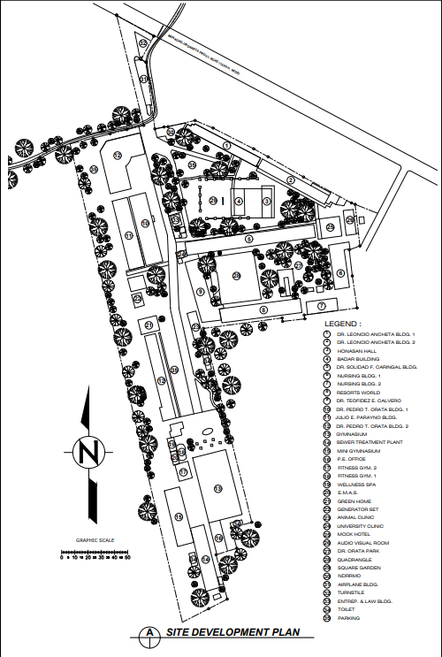

| Total Campus Area: 35,544 sq.m |
|---|
|
 Urdaneta City University Site Development Plan showing boundaries and zones.
|
The campus of Urdaneta City University (UCU) spans an impressive 35,544 square meters, offering a dynamic environment where academic excellence, community engagement, and environmental stewardship come together. Designed to be more than just a place for instruction, the campus serves as a vibrant academic hub that nurtures learning, collaboration, and the holistic development of its students and faculty.
A defining feature of the campus is its thoughtful integration of green and open spaces. Landscaped gardens, tree-lined walkways, and natural parks provide a refreshing setting that complements the university’s academic atmosphere. These areas not only enhance the visual appeal of the campus but also promote wellness, relaxation, and outdoor engagement, creating spaces where students and faculty can recharge, reflect, and interact within a healthy and inspiring environment.
Complementing these natural landscapes are modern academic and institutional facilities designed to support diverse academic programs. UCU houses well-equipped classrooms, advanced laboratories, and specialized buildings such as the Engineering Management and Auxiliary Services Building, the Sports Development Building, and the Nursing Buildings. These infrastructures are strategically developed to provide students with practical learning opportunities, innovative spaces for research, and a strong foundation for professional preparation.
Beyond its academic facilities, UCU ensures a well-rounded campus experience through essential student-centered amenities. The university provides accessible libraries that function as knowledge centers, a gymnasium that supports physical development, and dining and social spaces that encourage interaction and community building. Recreational areas—including the Botanical Garden, Chocolate Park, and Orata Park—further enrich campus life by offering venues for outdoor learning, cultural activities, and meaningful community engagement.
Overall, the campus of Urdaneta City University reflects a forward-thinking and holistic approach to campus planning. By harmonizing modern infrastructure with nature-inspired spaces, the university cultivates an environment that supports intellectual growth, well-being, and a strong sense of belonging. This balanced design not only enhances the daily experience of its academic community but also reinforces UCU’s commitment to creating a sustainable, inclusive, and inspiring place for learning and development.